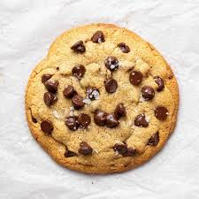
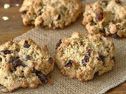

1. Preheat oven to 375°F (190°C). Grease muffin cups or line with muffin liners.
2. In a large bowl, combine flour, sugar, baking powder, and salt.
3. In another bowl, whisk together milk, melted butter, egg, and vanilla extract.
4. Pour wet ingredients into dry ingredients and stir until just combined. Gently fold in blueberries.
5. Spoon batter into muffin cups, filling each about 2/3 full.
6. Bake for 18-20 minutes or until tops are golden brown and a toothpick inserted into the center comes out clean.
7. Remove from oven and let cool in pan for 5 minutes before transferring to a wire rack to cool completely.

Chocolate Chip Cookies
Ingredients:
1 cup unsalted butter, softened
1 cup granulated sugar
1 cup packed brown sugar
2 eggs
1 tsp vanilla extract
3 cups all-purpose flour
1 tsp baking soda
1/2 tsp salt
2 cups semisweet chocolate chips
Instructions
1. Preheat oven to 350°F (175°C). Line baking sheets with parchment paper.
2. In a large bowl, cream together butter, granulated sugar, and brown sugar until smooth. Beat in eggs one at a time, then stir in vanilla.
3. Combine flour, baking soda, and salt; gradually stir into creamed mixture. Fold in chocolate chips.
4. Drop by rounded spoonfuls onto prepared baking sheets.
5. Bake for 10-12 minutes or until edges are golden brown. Allow cookies to cool on baking sheet for 5 minutes before transferring to a wire rack to cool completely.

Oatmeal Raisin Cookies
Ingredients:
1 cup unsalted butter, softened
1 cup packed brown sugar
1/2 cup granulated sugar
2 eggs
1 tsp vanilla extract
1 1/2 cups all-purpose flour
1 tsp baking soda
1/2 tsp salt
3 cups old-fashioned oats
1 cup raisins
Instructions
1. Preheat oven to 350°F (175°C). Line baking sheets with parchment paper.
2. In a large bowl, cream together softened butter, brown sugar, and granulated sugar until smooth.
3. Beat in eggs one at a time, then stir in vanilla extract.
4. In a separate bowl, combine flour, baking soda, and salt. Gradually add dry ingredients to the wet mixture, mixing until just combined.
5. Stir in oats and raisins until evenly distributed throughout the dough.
6. Drop rounded spoonfuls of dough onto prepared baking sheets, spacing them about 2 inches apart.
7. Bake for 10-12 minutes, or until cookies are lightly golden brown around the edges.
8. Remove from oven and let cool on baking sheets for a few minutes before transferring to wire racks to cool completely.